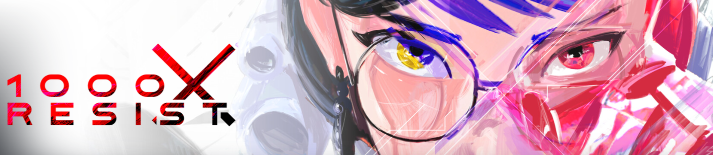
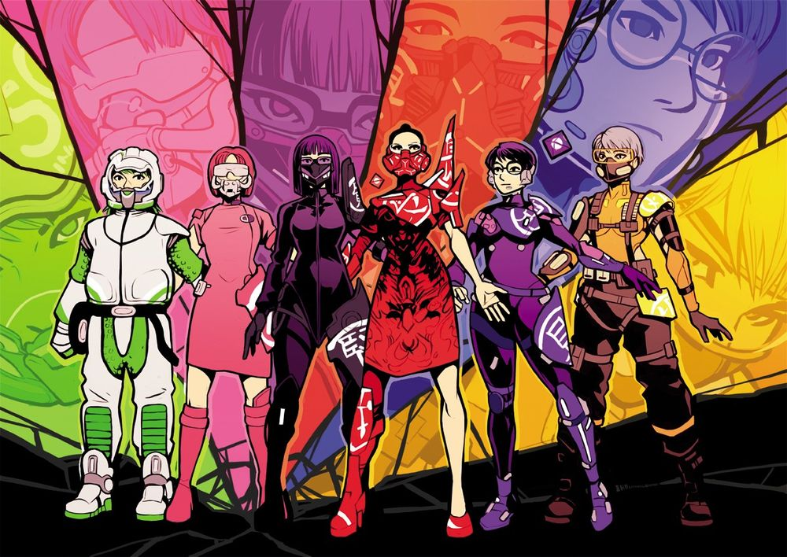

1000xResist is a heavily story based game with minimal gameplay focus.
The story itself is very good however is quite convoluted, I had to watch a story breakdown on youtube to fully understand what happened. With that greater understanding I found the story much more satisfying although I understood enough to enjoy it on my play though. I will not spoil the story but it touches on many themes, and shows many perspectives in non chronological order.
As with many of these type of games I found myself having to sort of force myself to play if for the first 8hrs, I was interested but would rather play something else, but by the last 4hrs I actually was invested and wanted to finish it. I really liked how it is just a 12hr game yet it manages to develop a story with characters and locations you feel invested in a way that makes it feel like it was a much longer experience. To many games / media rely on building investment through spending hours and hours with a character, this does it compact, in a way that doesn't waste your time.
The gameplay itself is just walking and talking to characters most of the time in a big hub. The hub is a little tricky to explore and a bit bland. I feel the devs were on a tight budget so whilst the art style is ok I feel the graphics feel a little basic. I think exploring the hub would have been much more interesting if more detail was added instead of large plain corridors. Also the shading on the character models was off somehow. I usually don't care much about graphics but when the game is just walking through mostly the same hub I think it would have allowed more immersion / interest if it was more polished.
I quite like the ending system they went with where you choose a combination of events and watch what unfolds afterwards. If you choose bad, it restarts you back to choose again. It allows your decisions to feel like they have purpose without having to deal with convoluted branching plotlines. I quite like the epilogue to, very melancholy and a good way to close out the game.
If you like narrative focused games with complex themes and storyline yet minimal gameplay then I would highly recommend 1000xRESIST.
The world is invaded by an alien force called the occupiers. They bring with them a virus that causes humans to die by crying out all the fluid through their eyes. Iris (All Mother) is somehow immune to this so a special government group known as the 50 take her away into an underwater ship / facility in order to do testing on her to find a cure whilst hiding away from the occupiers.
Iris has many clones created from her hair strands but they aren't immune. Things get tense on the ship as they lose all contact with the outside and are seemingly failing in there mission. Iris acts out a lot in a voilent fashion cullminating in her making a deal with the occupants where she gets to give her clones immunity to the virus and wipe out all of the 50 in exchange for giving the occupant strong memories / emotions (this is how occupants communicate and what they want)
Iris, now known as the all mother, creates a society full of her clones, each have different identities and colors to diffrentiate them. One particular clone, "youngest" is asigned the role of watcher and is very needy. Her sisters are very jelous of the attention she gets from all mother and treat her poorly. Youngest finds a diary that belonged to a childhood friend of Iris known as Jiao. She decides to impress all mother by cloning a Jiao for her. She botches the cloning process but does create a Jiao. All mother is fuming about this and shows her nasty streak by killing Jiao in front of youngest then banishing her to one side of the facility whilst the all mother and sisters stayed at the other side.
To earn all mothers forgiveness, youngest rebrands herself as Principle and starts creating clones of herself to train them up to be worthy of all mother. If they are worthy then a train is sent and they cross over to the other side. Principle says on the other side all mother is fighting the occupants and its her job to train the sisters up to be ready.
You start of the game from the perspective of a new watcher called Watcher. As part of her training she has communions where she visits the memories of all mother in an attempt to understand and learn from them. These communions are just a set up by Principle for a bigger plan. In her first communion watchers friend fixer hacks in and tells her that the all mother is actually a nasty person and is lying to them. This is seen as traitorous behaviour by watcher who tells Principle of this who then proceeds to publicly execute Fixer.
After more of these communions and more of Principle feeding Watcher the narritive that the All Mother is a liar and is working for the Occupants, a train comes for Watcher to go to the other side. Once she gets to the other side she kills the All Mother. Immidiately afterwards, Principle appears and blames Watcher for the death of the All Mother and has Watcher imprisoned.
We now skip forwards on to a new character, miscelaneuos 48 or Blue. She is part of the lower class, oppressed by the people living up top. Principle is now the leader and has her own army of soldiers at her command to keep the peace and her in power. After her friends death, Blue decideds to suicide bomb and kill Principle and those in her circle. She does this with the help of various factions including the Jiaos. Clones of Jiao made by Principle to serve the Iris Clones. She ends up survivng the blast thanks to a Jiao shielding her and then the sisters of watcher (who are still alive and have been hiding on a train) manage to get blue back to their train.
On the train is Watcher, her eyes gouged out after years of torture from Knower (one of Watchers original sisters who is playing both sides so that the original sisters can overthrow Principle). Watcher dumps all of her memories and the memories of Iris via communion into Blue (from an observer, which is a piece of an occupant assigned to the All Mother and given to watcher). Doing this takes a great toll on her physical body and she dies, however she leaves Blue with her Plan, to give all the sisters all of the memories of the all mother, watcher, and youngest / principle for them to make up there own minds instead of being subject to properganda like all of the sisters have been for their entire lives.
Blue and Watchers original sisters (Bang Bang Fire, Healer, and Fixer) manage to link up the observers and give memories to all the sisters in a grand communion. In this communion we learn that the occupants just wanted to collect memories to communicate and didn't mean to cause so much carnage. The Occupant then allows Blue to chose who lives and who dies before it leaves earth for good.
The player (Blue) can choose at this point who they think deserves a seconds chance or not but some you have to kill for a proper ending, like the oppressors (red guard). What happens after this is blue takes other and her and the remaining sisters manage to go top side and start a new society. In the epilogue you play as a Jiao she brings down to a now offline abandoned ship where there are several touching memorials for all the original sisters.
The story explores various themes:
-Memories, how they shape who we are, how they can control our future actions, how some things are worth remembering, and other things may just keep a trama cycle going if they are held on to.
-Moral grey zones, how doing the right thing can ask you to be unimaginably cruel to others and those you love.
-The difficulties of parenting and how past tramas can influence your life and be passed on to the next generation.
-Alien communications and misunderstandings between cultures can lead to devestation.
-The balance between holding grudges and forgiveness.
I really liked how the game had you play through various phases of these characters lives and you got to see how certain events shaped / traumatised them into the person they became in the future. All the characters are fully fleshed out and are on a spectrum of good to bad showing qualities from each. The story parts all come together nicely by the end and I was a little chocked up playing the epilogue with the memorials to the sisters you came to know throughout the game.

Click here to play a fake demo of 1000 X RESIST